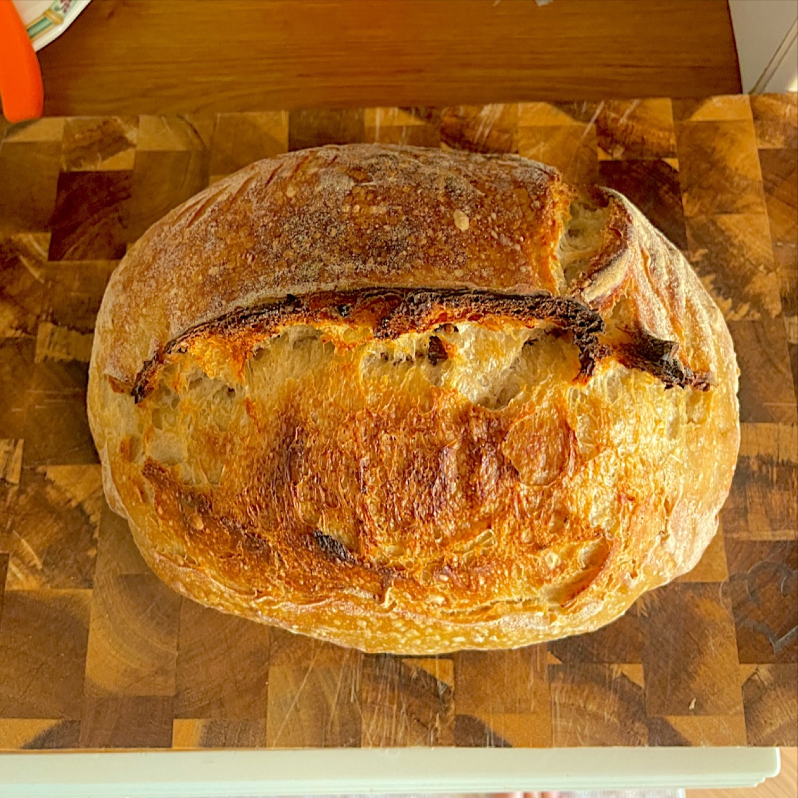

Blog / 2. Dezember 2026
Sauerteigbrot am selben Tag, ohne Kühlschrank

Ja, Sauerteigbrot geht an einem Tag. Lass die Nacht im Kühlschrank weg und gib dem geformten Teigling etwa eineinhalb Stunden Stückgare bei Raumtemperatur. Am Vorabend den Starter füttern, um sieben mischen, und um Viertel nach zwei kommt das Brot aus dem Ofen.
Das halbe Internet wird dir erklären, dass ein Brot ohne kalte Nacht kein echtes Sauerteigbrot ist. Ist es. Es ist nur Brot, das nicht warten wollte.
Die Zeiten gelten für eine Küche mit 22 °C und einen Starter, der nach einer 1:1:1-Fütterung in vier Stunden am Höhepunkt ist.
Der Zeitplan
| Wann | Was | Dauer |
|---|---|---|
| 22:00 am Vorabend | Starter 1:5:5 füttern | etwa 9 Std. bis zum Höhepunkt |
| 7:00 | Mehl und Wasser mischen, stehen lassen | 30 Min. |
| 7:30 | Starter und Salz dazu. Hier beginnt die Stockgare | 4 Std. |
| 8:00 bis 9:30 | Viermal Dehnen und Falten, alle halbe Stunde | während der Stockgare |
| 11:30 | Vorformen, dann ruhen lassen | 30 Min. |
| 12:00 | Formen, ins Gärkörbchen, auf die Arbeitsfläche | 1 Std. 30 |
| 13:00 | Ofen einschalten | 30 Min. |
| 13:30 | Einschneiden und backen | 45 Min. |
| 14:15 | Aus dem Ofen. Vor dem Anschnitt eine Stunde warten |
Die letzte Zeile ist der schwierigste Schritt auf dieser Seite. Die Regeln mache nicht ich.
Die Stückgare bei Raumtemperatur
Dieser Schritt ersetzt den Kühlschrank, und auf ihn musst du aufpassen. Bei Raumtemperatur gärt der Teigling mit vollem Tempo weiter, das Fenster ist also kurz. Bei 22 °C sind rund neunzig Minuten üblich. In einer warmen Küche kann es eine Stunde sein.
Mach die Fingerprobe. Drück einen bemehlten Finger einen Zentimeter tief in den Teig:
- Er springt sofort zurück: noch nicht so weit. Gib ihm weitere zwanzig Minuten.
- Er kommt langsam zurück und lässt eine kleine Delle: jetzt backen.
- Die Delle bleibt: schon etwas zu weit. Sofort backen, und keine Panik.
Untergare oder Übergare zeigt, wie beides nach dem Backen aussieht.
Was du dafür aufgibst
- Säure. Ein großer Teil kommt aus der langen kalten Nacht. Ein Brot vom selben Tag ist milder.
- Leichtes Einschneiden. Kalter Teig ist fest, die Klinge gleitet. Warmer Teig ist weich und zieht. Nimm eine frische Klinge und mach einen entschlossenen Schnitt. Entschlossenheit kann man auch spielen.
- Spielraum. Ein Teigling im Kühlschrank wartet stundenlang auf dich. Einer auf der Arbeitsfläche wartet auf niemanden.
Was bleibt, ist ein ordentlich gereiftes Brot mit guter Krume. Der Kühlschrank ist Bequemlichkeit und eine Geschmacksfrage. Das Brot braucht ihn nicht.
Noch schneller
- Mehr Starter. 150 g auf 500 g Mehl bringen die Stockgare von vier auf etwa drei Stunden. Siehe Wie viel Starter kommt in den Teig?
- Ein warmer Platz. Bei 26 °C dauern vier Stunden Stockgare etwa drei. Im Ofen, in dem nur das Licht brennt, hat es meist ungefähr so viel.
Mit beidem ist Brot zu Mittag realistisch. Der Teig ist dann schnell unterwegs, schau also früh nach. Er wartet nicht, bis du noch schnell eine Mail beantwortet hast.
In der App
Wenn du in Sourdough Diary einen Teigling formst, fragt die App, wohin er kommt: in den Kühlschrank oder auf die Arbeitsfläche. Für die Arbeitsfläche stellt sie eine kürzere Uhr, die du ändern kannst, und sagt dir, wann du den Ofen einschaltest.